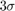
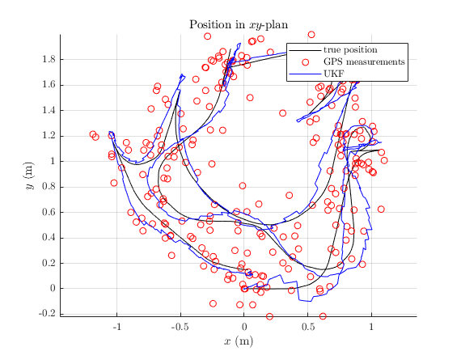
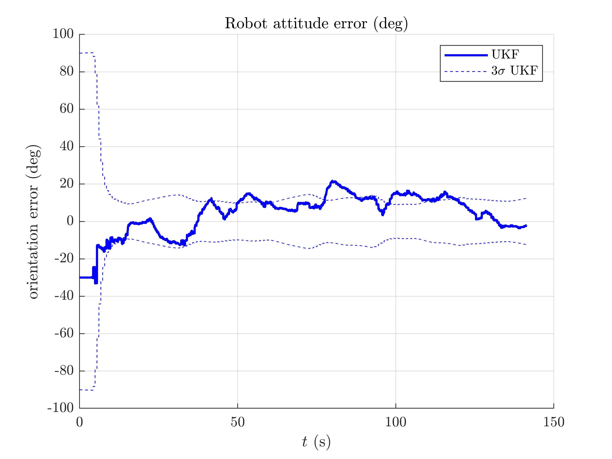
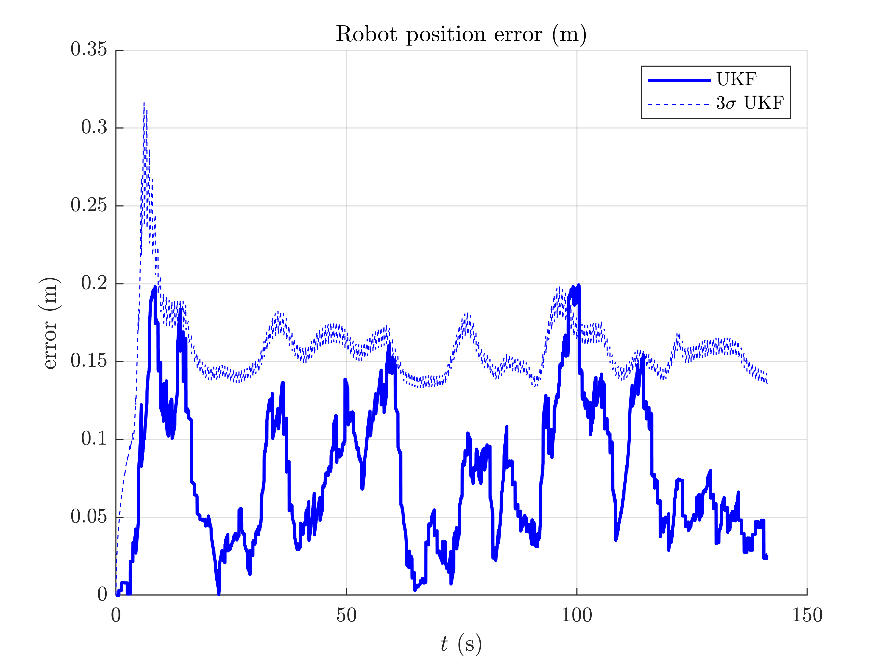

2D Robot Localization on Real Data
Goals of this script:
- apply the UKF for the 2D robot localization example with real data.
We assume the reader is already familiar with the considered problem described in the tutorial.
We address the same problem described in the 2D robot localization tutorial, with real data.
Contents
Initialization
Start by cleaning the workspace.
clear all; close all;
Model and Data
Instead of creating data, we load recorded data. We have recorded five sequences (sequence 2 and 3 are the more interesting).
% n_sequence a sequence n_sequence = 2; % GPS frequency (Hz) gps_freq = 2; % GPS noise standard deviation (m) gps_noise_std = 0.1; % load data, where we simulation position measurement [states, omegas, ys, one_hot_ys, t] = wifibot_load(n_sequence, ... gps_freq, gps_noise_std); odo_noise_std = [0.15; % longitudinal speed 0.05; % transversal shift speed 0.15]; % differential odometry % total number of timestamps N = length(states);
Filter Design and Initialization
% propagation noise matrix ukf_Q = diag(odo_noise_std.^2); % measurement noise matrix ukf_R = gps_noise_std.^2 * eye(2); % initial error matrix ukf_P0 = zeros(3, 3); % The state is not perfectly initialized ukf_P0(1, 1) = (30/180*pi)^2; % sigma point parameters ukf_alpha = [1e-3, 1e-3, 1e-3]; % define the UKF propagation and measurement functions ukf_f = @localization_f; ukf_h = @localization_h; ukf_phi = @localization_left_phi; ukf_phi_inv = @localization_left_phi_inv; % get UKF weight parameters ukf_weights = ukf_set_weight(3, 2, ukf_alpha); % compute Cholewski decomposition of Q only once ukf_cholQ = chol(ukf_Q); ukf_state = states(1); % add error ukf_state.Rot = ukf_state.Rot * so2_exp(sqrt(ukf_P0(1, 1))); ukf_P = ukf_P0; % set variables for recording estimates along the full trajectory ukf_states = ukf_state; ukf_Ps = zeros(N, length(ukf_P), length(ukf_P)); ukf_Ps(1, :, :) = ukf_P; % measurement iteration number (first measurement is for n == 1) k = 2;
Filtering
The UKF proceeds as a standard Kalman filter with a simple for loop.
for n = 2:N % propagation dt = t(n) - t(n-1); ukf_Q = diag(odo_noise_std.^2); [ukf_state, ukf_P] = ukf_propagation(ukf_state, ukf_P, omegas(n-1), ... ukf_f, dt, ukf_phi, ukf_phi_inv, ukf_cholQ, ukf_weights); % update only if a measurement is received if one_hot_ys(n) == 1 [ukf_state, ukf_P] = ukf_update(ukf_state, ukf_P, ys(:, k), ... ukf_h, ukf_phi, ukf_R, ukf_weights); k = k + 1; end % save estimates ukf_states(n) = ukf_state; ukf_Ps(n, :, :) = ukf_P; end
Results
We plot the trajectory, GPS measurements and estimated trajectory. As UKF estimates the covariance of the error, we have plotted the 95% confident interval ().
wifibot_results_plot(ukf_states, ukf_Ps, states, dt, ys)
0.0685  
Conclusion
This script apply the UKF for localizing a robot on real data. The filter works apparently well on this localization problem on real data, with moderate initial heading error.
You can now:
- test the UKF on different sequences and with a different choice of retraction.
- address the UKF for the same problem with range and bearing measurements of known landmarks.
- enter more in depth with the theory, see [BBB19].
- benchmark the UKF with different function error and compare the new filters to both the extended Kalman filter and invariant extended Kalman filter of [BB17] (see the benchmarks section).